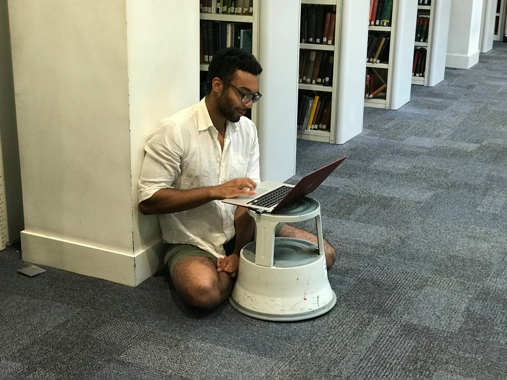

Shakeel Gavioli-Akilagun |
 |
|
Hello! Welcome to Shakeel's academic website. I am a Fellow in Statistics at the London School of Economics and Political Science; I am part of the Time Series and Statistical Learning research group. Previously I was a PhD student in the same department, where I was supervised by Professor Piotr Fryzlewicz. Some of my research interests include:
A recent version of my CV can be found here.
|
|
|
Fast and Optimal Inference for Change Points in Piecewise Polynomials via Differencing. S. Gavioli-Akilagun and P. Fryzlewicz. Electronic Journal of Statistics (2025) [open access link; R package; numerical examples]
Invited discussion of "Automatic Change-Point Detection in Time Series via Deep Learning" by Li, Fearnhead, Fryzlewicz, and Wang. S. Gavioli-Akilagun. Journal of the Royal Statistical Society Series B (2023) [discussion; slides; original paper]
Detecting Changes in Production Frontiers. S. Gavioli-Akilagun and Y. Chen. Work in progress (2024+)
Online Detection of Changes in Mean Reverting Processes with Local Cointergration. S. Gavioli-Akilagun, B. Dou, S. Tiwari, and Q. Yao. Work in progress (2024+)
Robust Inference for Change Points in Piecewise Polynomials using Confidence Sets. S. Gavioli-Akilagun and P. Fryzlewicz. Manuscript in preparation (2023+)
Recovering Causal Structures in Change Point Regressions via Hawkes Process Representation. S. Gavioli-Akilagun and P. Fryzlewicz. Manuscript in preparation (2023+)
|
|
|